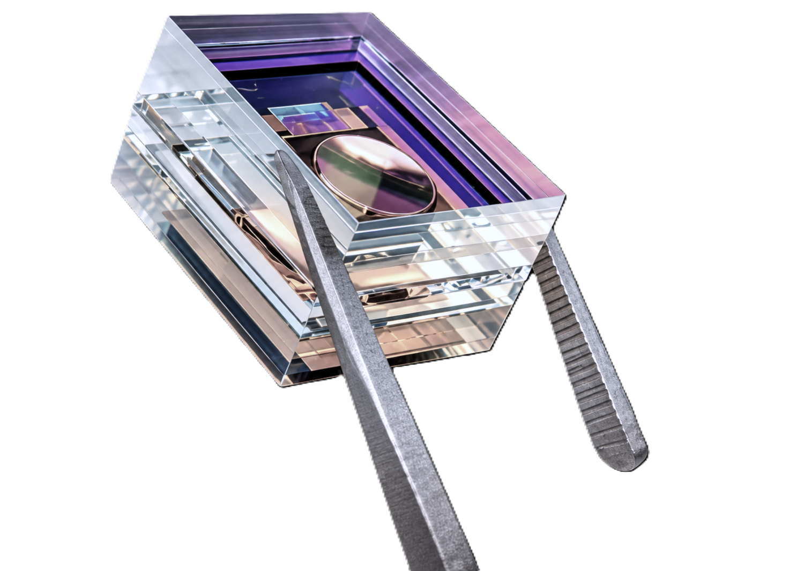
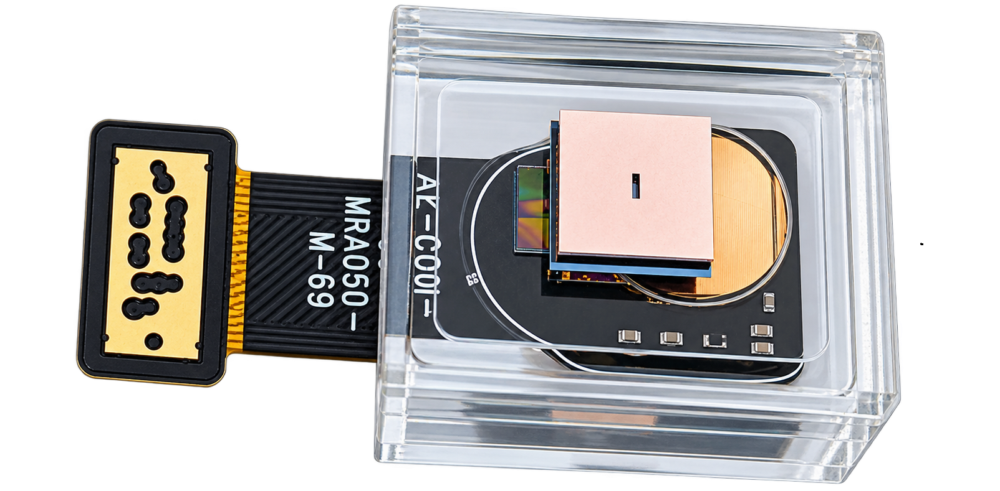

Near-infrared spectral sensing on a single micro optics chip - a polymer photonics micro-spectrometer that is miniature, robust, and built for volume production.
The SPIO NIR spectrometer brings near-infrared spectral analysis into a footprint small enough to embed directly in handheld and inline instruments. Built on our Stacked Planar Integrated Optics platform, it replaces bulky free-space optical benches with a fully passive optical chip.
Typical applications include material identification, moisture and composition analysis, and quality control across agriculture, food, and industrial settings.

Key specifications for the SPIO NIR spectrometer.
| Spectral range | 820-1100 nm |
|---|---|
| Spectral resolution | 8 nm |
| Unit dimensions | 10 × 12.5 × 10 mm |
| Detector interface | Raspberry Pi |
| Input coupling |
Free-space
Slit: 15 × 500 µm
NA: 0.22
|
| Operating temperature | -15 to 55 °C |
Feature description placeholder - highlight the size advantage over conventional NIR spectrometers.
Feature description placeholder - wafer-level fabrication for scalable, repeatable volume production.
Feature description placeholder - no moving parts, mechanically stable, ready for harsh environments.
Placeholder - soil, crop and feed analysis.
Placeholder - diagnostics and point-of-care.
Placeholder - composition and freshness.
Placeholder - inline process monitoring.
Contact our engineers for early access, specifications, and integration support.
Request Information →